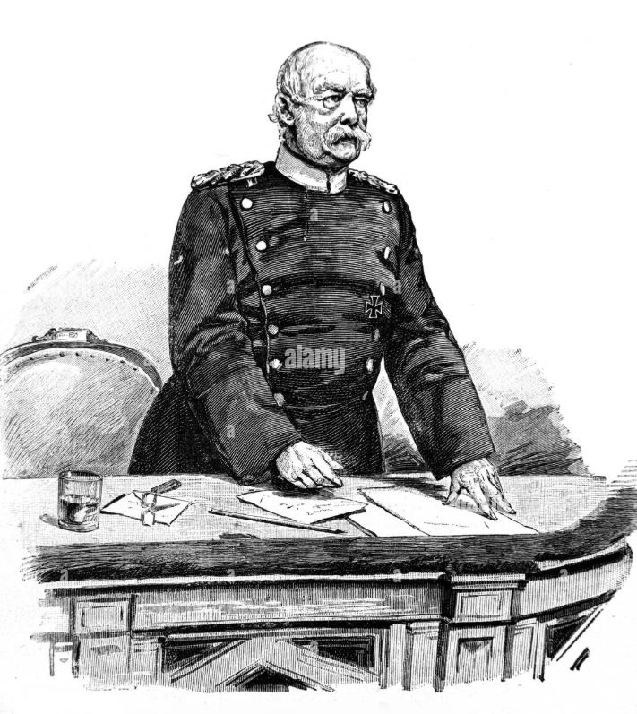
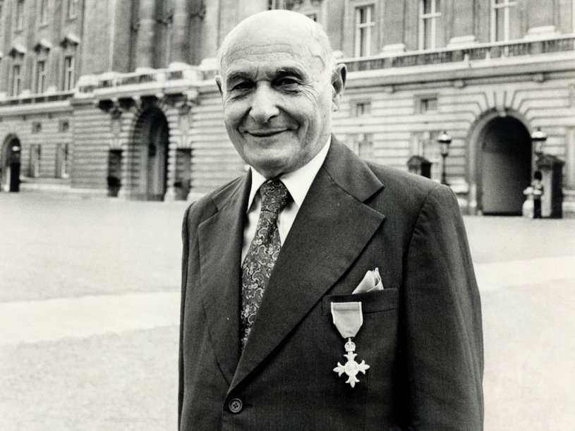

What is this writting about?
I wanna write about my favorite dudes to the present time. There's a list of cool persons. All of them changed the world! I hope you like it!
1. Otto von Bismark

I like him! He's first canslanger of Germany Imperium. Semcemery, he's conserveter but he created many useful things for Politics and make Germany strong again ;) i wanna know him better so I'm trying to read his works but there're so many boring water! Good luck!
2. Garbo

And him too